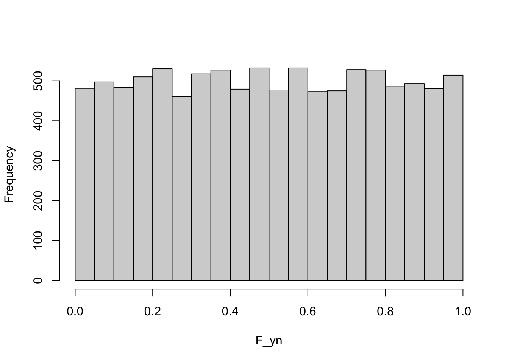

set.seed(534)
binom <- sum(runif(10) <= 0.3)
binom[1] 4Statistical computing and computational statistics (see Section 1.1) rely heavily on processing streams of random numbers. Stochastic processes make assumptions about the probabilistic behavior of data, we need computational methods to study the processes. For example, a common assumption in models for continuous response \(Y\) is \[ Y = f(x) + \epsilon \qquad \epsilon \sim \textit{ iid } G(0,\sigma^2) \]
To generate data from this process requires access to Gaussian random variables. In a time series process, future observations are recursively related to current observations. For example, the auto-regressive process of first order (AR(1)) is defined as \[ Y(t) = \rho Y(t-1) + \epsilon(t) \]
Here, \(Y(t)\) is the observation of the time series at time \(t\), \(\rho\) is a parameter of the process, and the \(\epsilon(t)\) are independent random errors, also called the random shocks or innovations of the process. To
generate a realization of this time series process in the computer we need to generate realizations of the random shocks—this requires a process to generate random numbers.
Generating realizations of random processes is called simulation and is obviously important to study the properties of these processes via computing. Random numbers come into play in other applications of statistical programming and data analysis. Here are some of them:
Random sampling. Selecting a random subset \(n\) from a data frame of size \(N\).
Random assignment. In an experimental design, treatments are assigned at random to experiemental units.
Data partitioning. Partitioning data randomly into subsets for model training, testing, and validation. Partitioning data into \(k\) random subsets of (approximately) equal size for \(k\)-fold cross-validation.
Bootstrapping. Drawing repeated samples with replacement from a data set of size \(n\) to build the empirical distribution of statistical quantities.
Starting values. Estimation of parameters in nonlinear models requires starting values from which to commence the iterations. In neural networks these starting values are typically selected at random. In \(k\)-means clustering the initial configuration also involves a random element: either observations are assigned randomly to \(k\) clusters or \(k\) observations are randomly chosen as cluster centroids.
Monte Carlo experiments. Simulate a range of scenarios for evaluation in complex systems. For example, a common method of evaluating the value at risk in a financial portfolio is to compute the distribution of portfolio values from simulated future market states.
Permutation-based analysis. A whole series of analytic methods rely on calculating metrics on randomly permuted observations. For example, the importance of a variable in a model can be ascertained by permuting the values of the variable and measuring how a model performance metric such as the mean-squared error changes. If the metric does not change much when the variable’s values are permuted, then it is not an important driver of the model.
Jittering. To avoid overlaying symbols on graphics, their location is sometimes slightly perturbed, a process called jittering. Some local methods for model explainability perturb the values of the predictor variables in a small neighborhood to examine how the model predictions react.
Most random number generators (RNGs) are not generating true random numbers in the sense that the sequence of numbers is impossible to foresee. They are pseudo random number generators (PRNGs), producing predetermined streams of numbers that appear random. If you were to fully comprehend the algorithm by which a PRNG generates the next value based on its current state, the sequence of numbers it produces from this point on would be completely predictable. There would be nothing random about it at all.
An example of a true random number generator, and probably a surprising one, is the wall of lava lamps in the lobby of the San Francisco office of internet infrastructure company Cloudflare.
Example: Cloudflare Lava Lamps: LavaRand
In the lobby of the San Francisco office of internet service provider Cloudflare is a wall of eighty lava lamps (Figure 9.1). This is not some retro thing, but part of the mission-critical operations of the internet infrastructure company. The lava lamps are used to generate cryptographic keys to secure the internet communications and services. Cloudflare is so convinced that the keys generated are unbreakable, because they are truly unpredictable, that they blog about how the lava-lamp key generator works; see here.
True cryptography requires that keys are unpredictable, something that computers are not good at. By definition, the operations of a computer are predictable, they follow a precise program. The same input will produce the same output—every time. The reliability of computers is bad for cryptography. You can make things better by making the input to a RNG random itself, known as a cryptographically-secure pseudorandom number generators (CSPRNGs). That would make the sequence less predictable but where does the random input come from? Another “predictable” random number generator?

Cloudflare uses the wall of 80 lava lamps to generate unpredictable input using a camera that continuously looks at the wall and takes video of the state of the lamps. From the Cloudflare blog:
LavaRand is a system that uses lava lamps as a secondary source of randomness for our production servers. A wall of lava lamps in the lobby of our San Francisco office provides an unpredictable input to a camera aimed at the wall. A video feed from the camera is fed into a CSPRNG, and that CSPRNG provides a stream of random values that can be used as an extra source of randomness by our production servers. Since the flow of the “lava” in a lava lamp is very unpredictable, “measuring” the lamps by taking footage of them is a good way to obtain unpredictable randomness.
Computers are predictable, the physical real world is not!
Let us assume that we have a method to generate (pseudo-) random numbers from a basic distribution, for example, a continuous uniform distribution on \((0,1)\). How that is accomplished is discussed in Section 9.3.
We can use the \(U(0,1)\) pseudo random numbers to create pseudo random numbers from other distributions by applying simple techniques:
This approach to generating random numbers based on uniform numbers applies transformations that lead to known distributions.
For example, the Box-Muller method (Box and Muller 1958) generates pairs of independent standard Gaussian random variables from pairs of independent uniform random variables. If \(U_1\) and \(U_2\) are independent draws from a uniform distribution on [0,1], then \[ \begin{align*} Z_1 &= \sqrt{-2\log U_1} \cos(2\pi U_2) \\ Z_2 &= \sqrt{-2\log U_1} \sin(2\pi U_2) \end{align*} \] are independent random variables with G(0,1) distribution. The Box-Muller random number generator is an example of transforming uniform variables into normal variables without going through the quantile function (Section 9.2.2).
Many discrete distributions can be expressed as functions of Bernoulli(\(\pi\)) random variables. The Binomial(\(n,\pi\)) random variable is the sum of \(n\) independent Bernoulli(\(\pi\)) r.v.s. A geometric random variable is the number of non-events until the first event occurs in a sequence of independent Bernoulli(\(\pi\)) experiments. The negative binomial is the number of non-events until the \(k\)th event occurs.
A Bernoulli(\(\pi\)) random number is generated from a \(U(0,1)\) random number simply by labeling as events all draws where \(u \le \pi\). The following code draws a random number from a Binomial(10,0.3) distribution by summing the results of 10 Bernoulli(0.3) draws which in turn are based on \(U(0,1)\) draws.
set.seed(534)
binom <- sum(runif(10) <= 0.3)
binom[1] 4Can you generally generate random numbers for one distribution from random numbers for another distribution? If the answer is “Yes” this could make it easier to write random number generators, a basic generator could be used to transform random numbers from one distribution into those of another. Fortunately, the answer is indeed “Yes” and the results leading there are very cool properties of cumulative distribution (c.d.f.) and quantile functions.
Definition: Quantile Function
If \(Y\) is a random variable with c.d.f. \(F(y) = \Pr(Y \le y)\), then the quantile function \(Q(p)\) is the inverse of the cumulative distribution function; for a given probability \(p\), it returns the value \(y\) for which \(F(y) = p\): \[ Q(p) = F^{-1}(p) \]
So, if \(F\) maps \(F:\mathbb{R} \rightarrow [0,1]\), the quantile function maps \(Q:[0,1] \rightarrow \mathbb{R}\).
Here is a possibly surprising result: if \(Y\) has c.d.f. \(F(y)\), then we can think of the c.d.f as a transformation of \(Y\). What would its distribution look like? The following R code draws 10,000 samples from a G(\(2,1.5^2\)) distribution and plots the histogram of the c.d.f. values \(F(y)\).
# See section below on setting random number seed values
set.seed(455675)
yn <- rnorm(10000,mean=2,sd=1.5)
F_yn <- pnorm(yn,mean=2,sd=1.5)
hist(F_yn,main="")
The distribution of \(F(y)\) is uniform on (0,1)—this is true for any distribution, not just the Gaussian.
We can combine this result with the following, possibly also surprising, result:
If \(U\) is a uniform random variable, and \(Q(p)\) is the quantile function of \(Y\), then \(Q(u)\) has the same distribution as \(Y\).
This suggests a method to generate random numbers from any distribution if you have a generator of \(U(0,1)\) random numbers: plug the uniform random numbers into the quantile function. Figure 9.2 shows this for G(\(2,1.5^2\)) random numbers and Figure 9.3 for Beta(1.5,3) random numbers.
norm_rv <- qnorm(runif(1000),mean=2,sd=1.5)
hist(norm_rv,main="",xlab="Y")beta_rv <- qbeta(runif(1000),shape1=1.5,shape2=3)
hist(beta_rv,main="",xlab="Y")Because the quantile function is the inverse c.d.f., this method of generating random numbers is also known as the inversion method.
Now that we have seen that it works, here is a simple proof of why this works. We formally define the quantile function as \(Q(p) = F^{-1}(p) = \inf\{y | F(y) \ge p\}\), \(0 < p < 1\).
\[ \Pr(Q(U) \le y) = \Pr(U \le F(y)) = F(y) \]
The first equality follows from \(Q^{-1}(Q(U)) = U\) and \(Q^{-1}(y) = F(y)\). The second equality follows because for a \(U(0,1)\) random variable, \(\Pr(U \le x) = x\).
A general, and very intuitive, method to create random numbers from any distribution is based on acceptance-rejection sampling.
Suppose that we do not know the quantile function \(Q(p)\), and all we have is the density or mass function \(p(y)\) of the variable whose random numbers we wish to generate? Such a situation might arise when we observe an empirical distribution function and now want to generate a sequence of random numbers from the particular distribution. Or maybe the quantile function is so difficult to compute that other methods of generating random numbers are more efficient.
Again, we can use uniform random numbers and “transform” them in such a way that the long-run frequency distribution of the transform matches the target distribution. Figure 9.4 depicts the idea graphically.
The target distribution we wish to draw random numbers from is \(p(y)\). We know the density to the extent that we can evaluate whether a pair of points \((y,U(y))\) falls above or below \(p(y)\). This allows us to transform a sequence of uniform random numbers drawn between \([\min(y),\max(y)]\) into a sequence of random numbers from \(p(y)\).
The acceptance-rejection algorithm to sample from \(p(y)\) based on \(U(\min(y),\max(y))\) random variables is very simple (Figure 9.5):
You continue this acceptance-rejection decision until you have accepted enough random numbers.
Example: Rejection Method for Beta(\(\alpha,\beta\))
Suppose we wish to generate 1,000 random numbers from a Beta distribution and we do not have access to a quantile function. However, we can evaluate the density of the Beta random variable \(Y\), \[ f(y) = \frac{\Gamma(\alpha+\beta)}{\Gamma(\alpha)\Gamma(\beta)}\, y^{\alpha-1}\,(1-y)^{\beta-1}\quad 0 < y < 1 \]
In R we can calculate this with the dbeta(y,alpha,beta) function. The following code uses a simple while loop to fill the pre-allocated vector rbet with Beta(1.5,3) random variables. The maximum density of a Beta(1.5,3) is about \(\max\{p(y)\} = 1.87\); this value is used in generating the random number for the vertical axis.
rbet <- rep(NA,1000)
numacc <- 0
ntries <- 0
while (numacc < length(rbet)) {
# Draw independent random numbers for abscissa and ordinate
x <- runif(1,0,1 )
y <- runif(1,0,1.87)
# Check whether to accept or reject X depending on
# whether Y is below or above the target density
if (y <= dbeta(x,1.5,3)) {
numacc <- numacc+1
rbet[numacc] <- x
}
ntries <- ntries + 1
}
ntries[1] 1851hist(rbet,main="")The distribution of the random numbers generated via quantile transform (Figure 9.3) and via acceptance-rejection (Figure 9.6) are very similar. Note that the acceptance method performs 1851 attempts, each requires two uniform random numbers. In total, the method uses 3702 uniform random numbers and 1851 evaluations of the Beta density function to create the random sequence of 1,000 Beta(1.5,3) draws. The U(0,1) is a special case of the Beta distributions with \(\alpha = \beta = 1\). The target distribution in this example is not that different from the sampled distribution. When the two distributions are more distinct, you will reject more samples along the way.
If you were to use acceptance-rejection sampling to generate data from a Beta(1,1) distribution, what would be the proportion of accepted samples?
ROne of the most commonly used random number generators for uniform random variables is the Mersenne Twister (MT) algorithm of Matsumoto and Nishimura (1998). The MT algorithm is the default RNG in many commercial and open source packages, for example, in R, SAS, SPSS, Stata.
The period of the Mersenne Twister algorithm is based on a Mersenne prime, from which it derives its name. The period of a PRNG is the sequence length after which the generated numbers repeat themselves. The period of the MT algorithm is very long, \(2^{19937}-1\). Obviously, you want the period to be very large, but that in itself does not guarantee a high quality random number generator. The algorithms also need to pass statistical tests that analyze the distribution of the generated sequences, for example the battery of “Diehard Tests”.
One such test examines whether successive pairs of observations drawn from U(0,1) evenly fill the unit square (Figure 9.7).
m = 40000
par(mfrow=c(1,2))
for (i in 1:2) {
u = runif(m);
plot(u[1:(m-1)], u[2:m], pch=".",
xlab="Value",
ylab="Next value")
}The MT algorithm performs well on these tests, but it is not perfect—no pseudo-random number generator is. For example, if you wish to generate independent sequences of random numbers, choosing different seed values for each sequence is not the way to go. You should instead use different segments of the same sequence.
The RNGkind() function in R returns a list of three strings that identify
RNGkind()[1] "Mersenne-Twister" "Inversion" "Rejection" In this setting, uniform random numbers are generated with the Mersenne Twister algorithm, Gaussian variates are generated by quantile inversion, and discrete niform random numbers are produced with an acceptance-rejection algorithm.
The RNGkind() function is also used to change the RNGs. For example, to use the Box-Muller algorithm instead of inversion for Gaussian random variables, specify
RNGkind(normal.kind="Box-Muller")
RNGkind()[1] "Mersenne-Twister" "Box-Muller" "Rejection" To reset the assignment to the default, use
RNGkind(normal.kind="default")
RNGkind()[1] "Mersenne-Twister" "Inversion" "Rejection" The state of a pseudo RNG is represented by a series of numbers, for the MT algorithm this is a vector of 624 integers. Once the state has been initialized, random numbers are generated according to the algorithm. Each time a random number is drawn, the state of the generator advances.
The state of the RNG can be seen with the .Random.seed variable, a vector of integers. The first value is an encoding of the three elements of RNGkind(). For the MT, .Random.seed[3:626] is the 624-dimensional integer vector of the RNG’s state. It is not recommended to make direct assignments to .Random.seed. Instead, you should initialize the RNG to a particular state through the seed value.
The random number seed is an integer that initializes the random number generator. What that initialization looks like depends on the RNG. The goal is the same, however: to place the RNG in a known state that generates a known sequence of random numbers. This makes statistical programs that depend on random numbers reproducible in the sense that the exact same results are generated each time the program runs. This might be necessary for auditing, to verify what the program does, and to lock the results for a production environment.
The set.seed function in R accomplishes that. Once the seed is set to a given value, the same random number sequence results.
set.seed(123)
runif(4)[1] 0.2875775 0.7883051 0.4089769 0.8830174runif(2)[1] 0.9404673 0.0455565set.seed(123)
runif(6)[1] 0.2875775 0.7883051 0.4089769 0.8830174 0.9404673 0.0455565Whether you draw 4 and then 2 random numbers or 6 numbers at once, the same sequence results.
If you do not set the seed, the system starts with an initial seed, usually chosen based on the system clock and/or the process ID, and the state of the RNG will differ from session to session. Calling set.seed(NULL) re-initializes the state of the RNG as if no seed had been set.
When it comes to seed values, here are some best practices
Do not go “seed hunting”. Changing the seed values until the results support a particular narrative is bad practice and borders on unethical behavior. If the simulation does not show what you expect, after setting a seed value, the problem might be that you are not drawing enough samples or your program might be incorrect. Do not try to “fix” things by experimenting with seed values.
To generate independent sequences of random numbers, do not use separate seeds for the sequences. Use a single seed and extract different segments from a single stream. Choosing an RNG with a long period is important in this case.
Some functions allow that seeds for their internal random number generation are passed as function arguments. It becomes confusing to use multiple methods throughout a program to affect random number streams. RNGs should be initialized once using set.seed(), preferably at the beginning of the program, and this should be clearly documented.
Do not use the same seed over and over. A best practice is to choose the seed itself based on a (true) random number generator. An acceptable method is to use the default initialization of the RNG and use one of the state variables as the seed; for example:
set.seed(NULL)
.Random.seed[10][1] 104098171set.seed(.Random.seed[10])You need to keep track of the chosen seed value outside of the program, otherwise the results are not reproducible.
Be aware that random numbers can be involved in subtle and unexpected ways in many parts of the code. Jittering observations on plots to avoid overlaying data points involves adding small random amounts—this will advance the internal state of the RNG. Subsampling, cross-validation, bootstrapping, train:test splits, measuring feature importance by permutation, are other examples of RNG-dependent techniques.
When you work with a program interactively, and execute the code in chunks, remember that the internal state of the RNG advances with each call to a random number function. Setting the seed once, then executing a code chunk with RNG three times in a row while debugging, then moving on to a second chunk that depends on random numbers will yield different results compared to running the code top-to-bottom or in batch mode.
It is not always possible to take complete control of random number streams in your statistical program. Stochastic elements can be involved in ways that you cannot fix with a set.seed() command. For example, when you fit artificial neural networks (ANNs) in R using the keras package, the code executes the underlying routines written in Python. Setting a seed in the R session does not affect the random number generator in the NumPy Python library. Even worse, Keras supports multiple machine learning frameworks. If it runs on TensorFlow, for example, TensorFlow has its own random number generator that is used in addition to the NumPy generator.
When code runs on multi-core CPUs or on GPUs (graphical processing units) it can (should) take advantage of threaded execution. This introduces a non-deterministic element to the computations that can result in slightly different numerical results on each run.
One suggestion to deal with this “inherent” lack of reproducibility is to run the analysis 30 times and take the average. This does not eliminate the lack of reproducibility, it only lessens it. In most cases the computational demand of this approach is prohibitive.
{kind=link}
{kind=link}